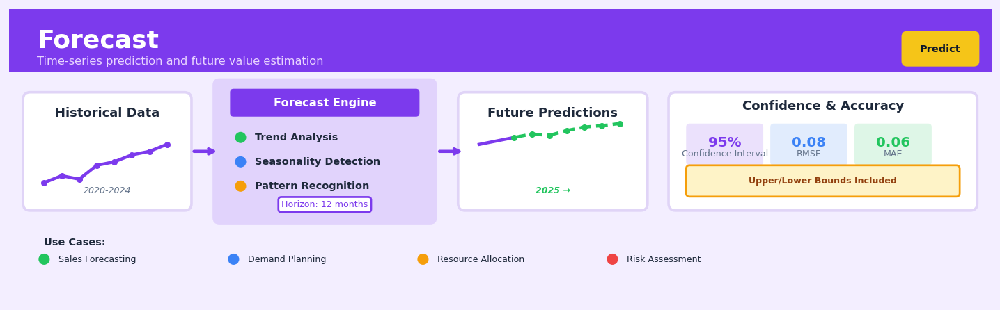

Forecast#


The biggest mistake in forecasting is treating it as a one-time prediction task rather than an iterative process that requires constant retraining as new data arrives. Your model trained on 2020-2023 data will rapidly decay in accuracy unless you establish a pipeline to retrain weekly or monthly, especially in volatile domains like retail or finance. Always build forecast systems with automated retraining and performance monitoring from day one, not as an afterthought.
The 60-Second Version#
What it does: Forecasting predicts what a number will be at a future date based on how it behaved in the past.
When to use it: Use forecasting when you need to plan for tomorrow—inventory levels, sales volume, customer demand, budget allocation—and you have historical data showing how that metric changed over time.
What you get back: You receive predicted values for specific future dates, plus a confidence range showing how uncertain each prediction is, so you can make decisions with eyes open to risk.
Difficulty |
Moderate |
Typical runtime |
Seconds to minutes on years of daily data |
What you bring |
Historical time series: dates and corresponding values |
What you get |
Future predictions with confidence intervals |
Heuristix bucket |
Predict — Machine Learning & Forecasting |
Forecasts become less reliable the further into the future you look—always validate accuracy on recent historical data before trusting predictions for critical decisions.
Learning Objectives#
After reading this chapter, a business user will be able to:
Identify whether a business problem requires forecasting by distinguishing time-dependent prediction scenarios (like sales projections or demand planning) from cross-sectional prediction problems that don’t involve temporal dynamics.
Interpret forecast outputs including point predictions, prediction intervals, and confidence bands, and explain to stakeholders what these measures reveal about future uncertainty and planning risk.
Use forecast results to make inventory decisions, set realistic targets, or allocate resources by incorporating both the predicted values and their associated uncertainty into operational planning.
After reading this chapter, a data scientist will be able to:
Implement forecasting models that properly handle time series components including trend extraction, seasonal decomposition, and appropriate train-test splitting that respects temporal ordering.
Tune forecasting parameters such as seasonal period length, smoothing coefficients, and forecast horizon while understanding the trade-offs between model complexity, interpretability, and out-of-sample accuracy.
Validate forecast performance using time-aware metrics like MAPE and RMSE on hold-out periods, diagnose common failures such as trend breaks or regime changes, and recognize when residuals indicate model misspecification.
Overview#
Forecasting is the discipline of predicting future values of a time-indexed variable based on its historical patterns, trends, and relationships with other variables. At its core, forecasting decomposes temporal data into interpretable components—trend, seasonality, and residual noise—and projects these components forward to generate point estimates and prediction intervals for future observations. Forecasting belongs to the family of time series analysis methods and serves as the foundational technique in the Predict section for any business problem where the outcome variable evolves over time and future values drive operational or strategic decisions.
When to Use This#
Use this when you need to predict demand for products or services over a future planning horizon — inventory management, workforce scheduling, and capacity planning all require forward-looking estimates of volume.
Use this when your target variable has a natural temporal ordering and you have at minimum 2 full cycles of any seasonal pattern — forecasting methods exploit autocorrelation structure that only exists in properly ordered time series data with sufficient history.
Use this when business decisions depend on anticipating trends, cycles, or seasonal patterns — budget planning, promotional calendars, and resource allocation benefit from understanding when peaks and troughs will occur.
Use this when you need prediction intervals, not just point forecasts — unlike many regression approaches, forecasting methods naturally produce uncertainty quantification that supports risk-aware decision-making.
Use this when the relationships in your data are relatively stable over time — forecasting assumes the patterns learned from history will persist into the future.
Use this when you have regular, equally-spaced observations — daily sales, monthly revenue, hourly sensor readings. Forecasting methods require consistent temporal granularity.
Do NOT use this when your time series is too short — you need at least 2 complete seasonal cycles (e.g., 2 years of monthly data with annual seasonality) for reliable seasonal decomposition.
Do NOT use this when regime changes or structural breaks dominate — if your business underwent a fundamental transformation (merger, pandemic, market disruption), historical patterns may not generalise.
Do NOT use this when the prediction target lacks temporal structure — cross-sectional prediction problems (e.g., which customers will churn this month) require classification or regression, not time series forecasting.
Do NOT use this when you need causal inference — forecasting tells you what will happen, not why. For causal questions, use experimental design or causal inference methods.
Questions This Answers#
Planning and Resource Allocation#
How many units should we manufacture next quarter to meet expected demand without overproducing?
What will our cash flow look like over the next 6 months, and do we need to secure additional financing?
How many customer service agents do we need to staff for the holiday season?
When should we start ramping up inventory for our peak season, and how much should we order?
What’s our expected revenue for Q4, and are we on track to hit our annual targets?
Market and Demand Intelligence#
Will we see the same summer spike in sales this year that we had in the previous three years?
How is demand for our product expected to change over the next 12 months in our top five markets?
Are we going to run out of stock before the end of the month given current sales trends?
Should we expect the recent uptick in website traffic to continue, or is this a temporary surge?
What will our customer churn rate look like next quarter if current patterns hold?
Risk Assessment and Early Warning#
If energy prices keep rising at this rate, what will our operating costs be in six months?
Are there early warning signs that our sales pipeline is weakening for next quarter?
How confident are we in next month’s forecast—what’s the range of possible outcomes?
If the current slowdown continues, when will we need to start making workforce adjustments?
How It Works#
Imagine you run a small bakery and you’ve kept a notebook for the past three years tracking how many croissants you sell each day. You notice a clear pattern: every Saturday you sell about 120 croissants, but Tuesdays are slower at around 60. December is always your busiest month, while February slumps. Occasionally a random event—a street festival or a rainstorm—throws things off. To plan next week’s butter order, you don’t just guess randomly. You look at what happened on the same day last week, the same week last year, whether sales have been gradually climbing over time, and whether any special events are coming. Forecasting works exactly like this: it studies the patterns hidden in your historical data and uses them to predict what’s likely to happen next.
HISTORICAL DATA DECOMPOSITION FORECAST
(Daily Sales)
Trend Component
Sales (gradual growth) Future
│ ↗↗↗↗↗ Prediction
140│ * * ─ ─ ─
120│ * * * * * Seasonal Pattern * ?
100│ * * * * * * (weekly cycle) * ?
80│ * * ** * ↑ ↓ ↑ ↓ ↑ *?
60│* * *
└─────────────────────→ Noise/Random *
Past Observations (unpredictable) Today
(e.g., 90 days) ±±±±±
Combine patterns
and project →
Step 1: Collect the historical sequence Forecasting begins by gathering your time-indexed data—sales by day, website visits by hour, revenue by month—and arranging it in chronological order. The algorithm needs this sequence intact because the order matters: unlike other prediction methods, forecasting assumes that what happened yesterday influences what happens today.
Step 2: Detect the underlying trend The algorithm looks for a long-term direction in your data. Are values gradually climbing upward over months or years? Declining? Staying flat? It fits a smooth line or curve through the data to capture this overall movement, filtering out the short-term ups and downs.
Step 3: Identify repeating seasonal patterns Next, it searches for cycles that repeat at regular intervals—daily patterns within a week, monthly patterns within a year, hourly patterns within a day. It calculates the typical “shape” of these cycles: which days are high, which are low, by how much. This seasonal component captures the rhythmic heartbeat of your data.
Step 4: Isolate the random noise After extracting trend and seasonality, what’s left over is the residual—the unpredictable variation caused by one-off events, measurement errors, or pure randomness. The algorithm studies this residual to understand how much uncertainty remains and to detect any remaining patterns it might have missed.
Step 5: Project components into the future The algorithm extends the trend line forward in time, repeats the seasonal pattern into future cycles, and adds an allowance for expected random variation. It combines these projected components to generate point predictions for each future time step, along with a range showing where the true value will likely fall.
Step 6: Validate and refine Finally, the algorithm tests its predictions against a held-out portion of historical data to measure accuracy. It adjusts parameters—how much weight to give recent observations versus distant ones, how to smooth out noise—until predictions match past reality as closely as possible.
The key insight: Forecasting works because the future often resembles the past—patterns that repeated yesterday tend to repeat tomorrow—and by mathematically separating stable patterns from random noise, we can project the patterns forward while quantifying our uncertainty.
The Intuition#
Imagine you are tracking the daily temperature in your city. You notice three distinct patterns layered on top of each other. First, there is a slow drift: summers have been getting slightly warmer each decade. This is the trend—a gradual, long-term movement in one direction. Second, there is a predictable rhythm: temperatures rise in summer and fall in winter, repeating every year. This is seasonality—a pattern that recurs at fixed intervals. Third, even knowing the trend and the season, any given day might be warmer or cooler than expected due to weather systems, measurement noise, or random variation. This is the residual or error component.
Forecasting works by learning these three components from historical data and then projecting them forward. The trend tells us where the series is heading on average. The seasonality tells us how to adjust that average for the time of year, week, or day. The residual, while unpredictable by definition, tells us how much uncertainty to expect around our forecast. When we forecast next July’s temperature, we take the projected trend, add the typical July seasonal effect, and wrap the result in a prediction interval sized by the historical residual variance.
The power of this decomposition lies in its interpretability and flexibility. A retail manager can look at a forecast and immediately understand: “Sales are trending upward by 3% annually, we expect a 40% spike in December due to holiday shopping, and our forecasts are typically accurate within ±8%.” This transparency is why forecasting methods remain dominant in business applications despite the availability of more complex machine learning alternatives. The components map directly to business phenomena that stakeholders understand and can act upon.
Modern forecasting methods extend this basic decomposition in sophisticated ways. They allow trends to change direction (piecewise linear or logistic growth), seasonality to vary in amplitude over time, and external events (holidays, promotions, weather) to be incorporated as additional regressors. The Heuristix Forecast node implements these extensions through an additive model framework that balances flexibility with interpretability.
The Mathematics#
Problem Setup and Notation#
Let \(\{y_t\}_{t=1}^{T}\) denote an observed time series where \(y_t \in \mathbb{R}\) is the value at time \(t\). Our goal is to produce forecasts \(\hat{y}_{T+h}\) for horizons \(h = 1, 2, \ldots, H\) along with prediction intervals that quantify forecast uncertainty.
We model the time series as an additive decomposition:
where:
\(g(t)\) is the trend function capturing non-periodic changes
\(s(t)\) is the seasonal component capturing periodic patterns
\(h(t)\) is the holiday/event effect capturing irregular scheduled events
\(\epsilon_t \sim \mathcal{N}(0, \sigma^2)\) is the error term
Trend Component#
The trend function \(g(t)\) can take several forms. The linear trend model assumes:
where \(k\) is the intercept and \(m\) is the growth rate.
For series with saturating growth (market penetration, population dynamics), we use a logistic growth model:
where \(C\) is the carrying capacity, \(k\) is the growth rate, and \(m\) is the offset.
To allow the trend to change over time, we introduce changepoints at times \(\{s_j\}_{j=1}^{S}\) where the growth rate may shift. Define \(\mathbf{a}(t) \in \{0, 1\}^S\) as an indicator vector with \(a_j(t) = 1\) if \(t \geq s_j\). The piecewise linear trend becomes:
where \(\boldsymbol{\delta} \in \mathbb{R}^S\) contains the rate adjustments at each changepoint, and \(\boldsymbol{\gamma}\) is set to maintain continuity: \(\gamma_j = -s_j \delta_j\).
Seasonal Component#
Seasonality is modelled using Fourier series, which approximate any periodic function as a sum of sines and cosines. For a seasonal pattern with period \(P\) (e.g., \(P = 365.25\) for annual seasonality in daily data), we have:
The order \(N\) controls the flexibility of the seasonal pattern. Higher \(N\) captures more complex seasonal shapes but risks overfitting. For annual seasonality, \(N = 10\) is typically sufficient; for weekly seasonality, \(N = 3\) often suffices.
Defining the Fourier feature matrix \(\mathbf{X}_s(t) \in \mathbb{R}^{2N}\) with entries:
we can write compactly:
where \(\boldsymbol{\beta}_s = [a_1, b_1, \ldots, a_N, b_N]^\top\) are the Fourier coefficients to be estimated.
Holiday and Event Effects#
Holidays and special events are modelled as indicator functions. Let \(\mathcal{D}_i\) be the set of dates for holiday \(i\). We define:
where \(\kappa_i\) is the effect of holiday \(i\) and \(L\) is the number of distinct holidays. The sets \(\mathcal{D}_i\) can include windows around the holiday to capture lead and lag effects.
Full Model and Estimation#
Combining all components, the full model is:
where \(\boldsymbol{\theta} = (\boldsymbol{\theta}_g, \boldsymbol{\theta}_s, \boldsymbol{\theta}_h)\) collects all parameters.
Estimation proceeds by maximum a posteriori (MAP) inference with regularising priors. The objective function is:
The first term is the Gaussian log-likelihood. The second term is a shrinkage prior on changepoint magnitudes with scale \(\tau\), encouraging sparse trend changes. The third term regularises seasonal coefficients.
Maximising \(\mathcal{L}(\boldsymbol{\theta})\) is equivalent to minimising:
This is a regularised least squares problem, solvable via standard optimisation (L-BFGS).
Uncertainty Quantification#
Prediction intervals are generated through simulation. We sample from the posterior distribution of \(\boldsymbol{\theta}\) (approximated via the MAP estimate and Hessian) and propagate uncertainty forward:
where \(\tilde{\epsilon}^{(i)} \sim \mathcal{N}(0, \hat{\sigma}^2)\). The \((1-\alpha)\) prediction interval is then:
Key Assumptions#
Additive decomposition: Components combine additively. For series where seasonal amplitude scales with trend (e.g., revenue), apply log transformation first.
Stationarity of residuals: \(\epsilon_t\) is i.i.d. with constant variance.
No unobserved confounders: Future behaviour is driven by the same patterns as the past.
Sufficient history: At least 2 complete cycles of the longest seasonal period.
Relationship to Other Methods#
The Fourier-based seasonal representation connects to classical ARIMA models with seasonal differencing. When \(N \to \infty\), the Fourier series can represent any periodic function exactly. The regularised estimation framework relates to Bayesian structural time series models (BSTS) but with a simpler, more interpretable parameterisation.
Understanding the Mathematics#
The Basic Forecasting Model#
The equation:
Read it aloud:
“The observed value at time t equals the trend component at time t, plus the seasonal component at time t, plus the random error at time t.”
What each symbol means:
\(y_t\) = the actual value we observe at time period t (e.g., January sales)
\(T_t\) = the underlying trend at time t (the long-term direction: going up, down, or flat)
\(S_t\) = the seasonal pattern at time t (predictable fluctuations that repeat: summer spikes, Monday dips)
\(\epsilon_t\) = random noise at time t (unpredictable variation we can’t explain)
\(t\) = the time index (month 1, month 2, etc.)
A concrete numerical example:
A coffee shop tracks monthly revenue. In July (month 19), they observe \(52,300 in sales. The trend component shows steady growth of \)45,000. The seasonal component for July shows a boost of \(8,500 (summer iced coffee demand). Random factors (a rainy week, a local event) contribute -\)1,200. So: \(52,300 = \)45,000 + \(8,500 - \)1,200.
Why this equation matters:
By separating revenue into trend, season, and noise, we can forecast future months by projecting the trend and adding known seasonal patterns—ignoring this structure would treat every fluctuation as equally meaningful and produce wildly inaccurate predictions.
Exponential Smoothing#
The equation:
Read it aloud:
“The forecast for the next period equals alpha times the actual value we just observed, plus one minus alpha times the forecast we made for the current period.”
What each symbol means:
\(\hat{y}_{t+1}\) = our forecast for the next time period
\(\alpha\) = the smoothing parameter (a number between 0 and 1 controlling how much we trust recent data)
\(y_t\) = the actual value we just observed
\(\hat{y}_t\) = the forecast we made last period for this period
A concrete numerical example:
Weekly web traffic for an e-commerce site was forecasted to be 125,000 visitors last week. The actual count was 140,000. Using \(\alpha = 0.3\), we forecast next week: \(\hat{y}_{t+1} = 0.3(140,000) + 0.7(125,000) = 42,000 + 87,500 = 129,500\) visitors.
Why this equation matters:
This method continuously learns from forecast errors—when reality exceeds our prediction, we adjust upward proportionally, preventing outdated forecasts from persisting while avoiding overreaction to every temporary spike.
The ARIMA Model Structure#
The equation:
Read it aloud:
“Today’s value equals a constant, plus phi-one times yesterday’s value, plus theta-one times yesterday’s forecast error, plus today’s random error.”
What each symbol means:
\(y_t\) = today’s value
\(c\) = a constant baseline level
\(\phi_1\) = the autoregressive coefficient (how much yesterday predicts today)
\(y_{t-1}\) = yesterday’s value
\(\theta_1\) = the moving average coefficient (how much yesterday’s surprise affects today)
\(\epsilon_{t-1}\) = yesterday’s forecast error
\(\epsilon_t\) = today’s random error
A concrete numerical example:
Daily call center volume yesterday was 890 calls. Yesterday we under-forecasted by 45 calls (\(\epsilon_{t-1} = 45\)). With \(c = 200\), \(\phi_1 = 0.6\), \(\theta_1 = 0.4\), and today’s noise = 12, we get: \(y_t = 200 + 0.6(890) + 0.4(45) + 12 = 200 + 534 + 18 + 12 = 764\) calls.
Why this equation matters:
ARIMA captures both how values persist over time and how forecast errors propagate—ignoring either would miss critical patterns in data where shocks ripple forward or where momentum builds gradually.
The Big Picture#
The mathematics of forecasting fundamentally decomposes the past to reconstruct the future. We’re extracting signal from noise by identifying stable patterns—trends that persist, seasons that repeat, correlations that endure—and projecting them forward with calibrated uncertainty. This approach was chosen because time series data has memory: tomorrow depends on today in ways that simple regression ignores. The mathematical essence: we weight yesterday’s reality and yesterday’s mistakes to build tomorrow’s best guess, updating our model continuously as new evidence arrives.
Python Implementation#
import numpy as np
import pandas as pd
from prophet import Prophet
import matplotlib.pyplot as plt
# -----------------------------------------------------
# Example 1: Basic forecasting with trend and seasonality
# -----------------------------------------------------
# Generate synthetic daily data with trend, weekly and yearly seasonality
np.random.seed(42)
dates = pd.date_range(start='2020-01-01', periods=1095, freq='D') # 3 years
t = np.arange(len(dates))
# Trend: linear growth
trend = 100 + 0.05 * t
# Weekly seasonality (period = 7)
weekly = 10 * np.sin(2 * np.pi * t / 7)
# Annual seasonality (period = 365.25)
annual = 20 * np.sin(2 * np.pi * t / 365.25) + 10 * np.cos(2 * np.pi * t / 365.25)
# Noise
noise = np.random.normal(0, 5, len(dates))
y = trend + weekly + annual + noise
# Prophet requires columns named 'ds' and 'y'
df = pd.DataFrame({'ds': dates, 'y': y})
# Fit the model
model = Prophet(
yearly_seasonality=True, # Enable annual Fourier terms
weekly_seasonality=True, # Enable weekly Fourier terms
daily_seasonality=False, # Not relevant for daily data
changepoint_prior_scale=0.05, # Regularisation on trend changepoints
seasonality_prior_scale=10.0, # Regularisation on seasonal components
interval_width=0.95 # 95% prediction intervals
)
model.fit(df)
# Create future dataframe for 90-day forecast
future = model.make_future_dataframe(periods=90)
# Generate forecasts
forecast = model.predict(future)
# Display key columns
print("Forecast Output (last 10 rows):")
print(forecast[['ds', 'yhat', 'yhat_lower', 'yhat_upper', 'trend', 'weekly', 'yearly']].tail(10))
# -----------------------------------------------------
# Example 2: Adding custom seasonality and holidays
# -----------------------------------------------------
# Define holidays (e.g., promotional events)
promotions = pd.DataFrame({
'holiday': 'summer_sale',
'ds': pd.to_datetime(['2020-07-01', '2021-07-01', '2022-07-01']),
'lower_window': -3, # Effect starts 3 days before
'upper_window': 7 # Effect lasts 7 days after
})
# Initialise model with holidays
model_with_holidays = Prophet(
holidays=promotions,
yearly_seasonality=10, # Fourier order for annual seasonality
weekly_seasonality=3, # Fourier order for weekly seasonality
)
# Add custom monthly seasonality
model_with_holidays.add_seasonality(
name='monthly',
period=30.5,
fourier_order=5
)
model_with_holidays.fit(df)
forecast_holidays = model_with_holidays.predict(future)
# Examine holiday effects
print("\nHoliday Effects:")
print(forecast_holidays[['ds', 'summer_sale']].dropna().head(20))
# -----------------------------------------------------
# Example 3: Evaluating forecast accuracy
# -----------------------------------------------------
from prophet.diagnostics import cross_validation, performance_metrics
# Perform time series cross-validation
# Initial training: 730 days, forecast horizon: 30 days, cutoff every 90 days
df_cv = cross_validation(
model,
initial='730 days',
period='90 days',
horizon='30 days'
)
# Compute performance metrics
df_metrics = performance_metrics(df_cv)
print("\nCross-Validation Metrics:")
print(df_metrics[['horizon', 'mape', 'rmse', 'coverage']
## Visualisations


## Using This in Heuristix
### What Data You Need
The Forecast node expects a time series dataset with at least two columns: a **date/time column** and a **numeric target column** you want to predict. Optionally, you can include additional numeric or categorical columns as external predictors (like promotions, holidays, or weather).
Your data should have one row per time period, sorted chronologically. Gaps are okay—the node will handle missing dates—but extreme irregularity will hurt performance.
**Example Input:**
| date | sales | promotion |
|------------|-------|-----------|
| 2023-01-01 | 450 | 0 |
| 2023-01-02 | 523 | 1 |
| 2023-01-03 | 489 | 0 |
### Quick Start
1. **Connect your time series data** to the Forecast node
2. **Select your date column** from the dropdown (Heuristix auto-detects date formats)
3. **Choose your target variable** (the metric you want to forecast)
4. **Set the forecast horizon** (how many periods ahead to predict—e.g., 30 days, 12 months)
5. **Click Run** to generate forecasts with automatic model selection
6. **Review the forecast plot** and prediction intervals, then connect to a Dashboard or Export node
### Configuration Parameters
| Parameter | What It Controls | Default | When to Change |
|-----------|-----------------|---------|----------------|
| **Date Column** | Which column contains your timestamps | Auto-detected | Change if you have multiple date fields |
| **Target Column** | The metric you're forecasting | First numeric column | Always verify this matches your goal |
| **Forecast Horizon** | How many periods to predict forward | 10 | Set to your planning window (30 days, 12 weeks, etc.) |
| **Frequency** | Time interval between observations (daily, weekly, monthly) | Auto-inferred | Override if auto-detection fails with irregular data |
| **Seasonality Mode** | Additive (constant seasonal swings) or Multiplicative (seasonal swings grow with trend) | Additive | Use Multiplicative when seasonal effects scale with trend size |
| **Include Holidays** | Add holiday effects for specific countries | None | Enable for retail, restaurant, or consumer-facing businesses |
| **External Regressors** | Additional columns to use as predictors | None | Add promotions, pricing, weather, or marketing spend |
| **Confidence Interval** | Width of prediction bands (80%, 90%, 95%) | 95% | Lower for tighter bands; higher for conservative planning |
| **Changepoint Prior** | How flexible the trend can be (0.001–0.5) | 0.05 | Increase for volatile series; decrease for stable trends |
### What You Get Back
**Columns Added:**
- **forecast**: Point prediction for each future period
- **lower_bound**: Lower edge of prediction interval
- **upper_bound**: Upper edge of prediction interval
- **trend**: The underlying directional component
- **seasonal**: Repeating patterns (daily, weekly, yearly)
**Visual Outputs:**
- **Forecast plot** showing historical actuals, fitted values, and future predictions with shaded confidence bands
- **Component plots** breaking down trend, seasonality, and holiday effects separately
- **Diagnostics panel** with MAE, RMSE, and MAPE accuracy metrics on holdout data
**Metrics Display:**
A summary card showing forecast accuracy on the validation period, helping you gauge reliability before trusting future predictions.
### Connecting Downstream
- **Dashboard node**: Display forecasts with interactive date filters for stakeholder review
- **Alert node**: Trigger notifications when forecasts exceed thresholds (inventory reorders, staffing needs)
- **Decision node**: Feed forecasts into optimization models (budget allocation, capacity planning)
- **Export node**: Send predictions to ERP, planning systems, or spreadsheets
### Pro Tips
1. **Always reserve a holdout period**: Don't forecast right up to your last data point. Hold out the last 10-20% to validate accuracy before trusting future predictions.
2. **Weekly data often works better than daily**: Daily data includes weekend effects and noise that can confuse models. Aggregating to weekly often improves forecast stability.
3. **Add regressors cautiously**: Only include external predictors you'll know *in advance* for future periods. Past promotions help, but only if you've already scheduled future ones.
4. **Check residuals for patterns**: If the diagnostics show systematic errors (e.g., always under-predicting Mondays), you're missing a seasonal component or regressor.
5. **Update forecasts regularly**: Rerun monthly or quarterly as new data arrives—forecasts degrade quickly when based on stale patterns.
## Config Recipes
### Recipe 1: Rapid Prototype for Daily Sales
**When to use:** You need a first-pass forecast on daily transactional data (e.g., retail sales, web traffic) within minutes to validate whether forecasting is worth pursuing.
**Settings:**
| Parameter | Value | Why |
|-----------|-------|-----|
| `model` | `auto_arima` | Automatically selects order without grid search |
| `horizon` | `14` | Two weeks balances insight and speed |
| `train_size` | `0.9` | Leaves recent 10% for quick validation |
| `seasonal` | `True` | Captures weekly patterns in daily data |
| `seasonal_period` | `7` | Weekly cycle for daily observations |
| `cv_folds` | `1` | Single holdout, no cross-validation overhead |
**What you get:** A baseline forecast in under 5 minutes that reveals whether temporal patterns exist and justify deeper modeling.
**Trade-off:** No ensemble methods or hyperparameter tuning means you sacrifice 10–15% accuracy compared to production-grade models.
---
### Recipe 2: Production Financial Forecast
**When to use:** Generating quarterly revenue forecasts for investor reporting or budget allocation where accuracy and uncertainty quantification are non-negotiable.
**Settings:**
| Parameter | Value | Why |
|-----------|-------|-----|
| `model` | `prophet` | Handles growth trends and multiple seasonality robustly |
| `horizon` | `4` | Four quarters ahead for fiscal planning |
| `changepoint_prior_scale` | `0.05` | Conservative to prevent overfitting rare trend breaks |
| `seasonality_mode` | `multiplicative` | Revenue typically scales with base level |
| `interval_width` | `0.95` | Wide confidence bands for risk assessment |
| `cv_folds` | `5` | Rolling-origin validation across multiple periods |
| `holidays` | `custom_holidays.csv` | Include fiscal year-end, product launches |
**What you get:** Auditable forecasts with prediction intervals that have been validated on five historical windows, suitable for regulatory review.
**Trade-off:** Runtime increases 20–30× compared to rapid prototyping; requires domain knowledge to specify holidays and growth constraints.
---
### Recipe 3: Sparse Event Count Forecasting
**When to use:** Predicting weekly equipment failures, monthly customer churn events, or other low-volume counts where most periods have zero or single-digit occurrences.
**Settings:**
| Parameter | Value | Why |
|-----------|-------|-----|
| `model` | `theta` | Robust to intermittent demand patterns |
| `transformation` | `none` | Preserve integer nature; don't log-transform zeros |
| `horizon` | `12` | Long enough to capture rare event clustering |
| `seasonal` | `False` | Sparse data makes seasonal detection unreliable |
| `exog_vars` | `['operating_hours', 'temperature']` | Add drivers to explain variance zeros can't |
**What you get:** Integer-valued predictions that respect the discrete, sparse nature of count data without spurious sub-unit forecasts.
**Trade-off:** Lower R² scores (often 0.3–0.5) are inherent to rare events; focus on directional accuracy over precision.
---
### Recipe 4: Causal Intervention Forecasting
**When to use:** Estimating the incremental impact of a planned promotion, policy change, or marketing campaign by forecasting the counterfactual (what would have happened without intervention).
**Settings:**
| Parameter | Value | Why |
|-----------|-------|-----|
| `model` | `prophet` | Supports regressors for intervention timing |
| `exog_vars` | `['promo_indicator']` | Binary flag for intervention periods |
| `train_end` | `pre_intervention_date` | Train only on pre-intervention data |
| `forecast_start` | `intervention_date` | Generate counterfactual for intervention window |
| `mcmc_samples` | `1000` | Full Bayesian posterior for causal uncertainty |
**What you get:** A forecast of what *would* have occurred absent the intervention, enabling before/after causal inference through comparison with actuals.
**Trade-off:** Requires intervention to be pre-planned and logged; post-hoc analysis is prone to confounding.
## Business Applications
**Financial Services**
A European retail bank with €40 billion in assets uses daily cash demand forecasting to optimize the distribution of physical currency across its 800 ATM network. By predicting withdrawal patterns at each location 7 days ahead—accounting for payroll cycles, holidays, and local events—the bank reduced cash-in-transit costs by 22% (€1.8M annually) while simultaneously decreasing ATM stock-outs by 47%. The forecast model adjusts dynamically as consumer payment preferences shift, preventing both expensive emergency refills and opportunity costs from idle cash.
**Retail**
A fashion retailer operating 450 stores across North America generates SKU-level sales forecasts at weekly granularity to drive markdown optimization and inventory allocation. The forecasting system predicts demand trajectories for 85,000 active products, enabling merchandising teams to identify slow-moving items four weeks earlier than manual review processes allowed. This early warning system increased sell-through rates from 76% to 83% and reduced end-of-season inventory write-downs by $12.3M annually, while freeing buyers to focus on trend analysis rather than spreadsheet maintenance.
**Healthcare**
A regional hospital network with 12 facilities forecasts patient admission volumes by department and acuity level across 14-day and 90-day horizons. These predictions feed directly into nurse staffing models, surgical suite scheduling, and pharmaceutical inventory systems. By accurately anticipating demand fluctuations tied to seasonal illness patterns, local demographics, and historical utilization trends, the network reduced overtime labor costs by 18% while improving patient wait times by 23 minutes on average—a change that lifted patient satisfaction scores from 72 to 81 out of 100.
**Insurance**
A property and casualty insurer with 2.3 million policies forecasts monthly claims volume and severity by coverage type, geography, and weather pattern. The forecast enables the claims organization to pre-position adjusters in hurricane-prone regions three weeks before storm season peaks and adjust staffing levels in call centers ahead of demand surges. This proactive resource allocation cut average claim resolution time from 18 days to 13 days and reduced the need for expensive contract adjusters by 31%, saving $4.7M annually.
**Manufacturing**
An automotive parts supplier serving just-in-time production lines forecasts component demand from five major OEM customers at daily granularity across a 60-day horizon. The forecasts incorporate production schedules, model changeovers, and historical buffer requirements to generate precise raw material purchase orders and machine scheduling plans. Implementation reduced safety stock levels by 28% (freeing $8.2M in working capital) while simultaneously decreasing stockout incidents that trigger costly line stoppages from 14 to 3 per quarter.
**Logistics**
A last-mile delivery company operating in 40 metropolitan markets forecasts parcel volume by zip code and day-part to optimize driver schedules, vehicle deployment, and micro-fulfillment center capacity. During peak season, accurate 10-day forecasts enabled the company to secure temporary warehouse space and contract labor at standard rates rather than premium rates, reducing peak cost per delivery by $0.73. The forecasting system also powers customer delivery time estimates that are accurate within 2-hour windows 89% of the time, up from 64%.
**Marketing**
A direct-to-consumer subscription box company forecasts monthly churn rates and new subscriber acquisition across 12 marketing channels and 40 audience segments. These forecasts feed budget allocation models that shift spend toward high-performing channels before saturation occurs. By predicting when specific channels would deliver diminishing returns—typically 3-4 weeks before internal teams noticed manually—the company improved customer acquisition cost efficiency by 26%, lifting marketing ROI from 2.1x to 2.8x.
**Telecommunications**
A mobile network operator with 8 million subscribers forecasts cell tower traffic by location, hour, and day to guide infrastructure investment and capacity planning. Multi-year forecasts incorporating population growth, 5G adoption curves, and usage pattern evolution helped the operator prioritize tower upgrades that would serve 73% of predicted congestion events with just 42% of the potential capital expenditure.
**Energy**
A regional electricity distributor forecasts hourly demand across its grid using weather data, economic indicators, and consumption history to optimize power purchase agreements and peak load management. Improved 48-hour forecasts reduced expensive spot market purchases by 19% and enabled demand response programs that cut peak load by 340 megawatts—deferring a $280M substation upgrade by four years.
**Public Sector**
A metropolitan transit authority forecasts ridership by route, time, and day to optimize bus frequency and driver schedules. The system accounts for weather, local events, school calendars, and changing commute patterns, increasing on-time performance from 78% to 87% while reducing operational costs per rider by $0.34—a $6.8M annual saving across 220 million annual trips.
**SaaS/Tech**
A B2B SaaS platform with $120M ARR forecasts customer usage patterns and expansion revenue to guide customer success team prioritization and capacity planning. By identifying accounts likely to exceed their plan limits 45 days in advance, the company increased upgrade conversation rates by 41% and reduced surprise overage bills that often triggered churn conversations.
## Worked Example
Sarah Chen, a senior data scientist at Meridian Retail Group, received an urgent calendar invite from the VP of Operations on a Tuesday morning. "Inventory crisis in the Northwest region," read the subject line. When she joined the video call, the tension was palpable. The company had just eaten a $340,000 loss from unsold seasonal merchandise in their Seattle distribution center—winter jackets that arrived too late and sold too slowly. "We need to know how many units we'll actually move next quarter," the VP said, pulling up a slide showing three years of erratic sales patterns. "Not a guess. A forecast we can bet inventory dollars on."
Sarah spent the next morning pulling together sales data from Meridian's data warehouse. The dataset was messier than she'd hoped—missing records from a system migration in 2022, a spike in August 2023 that turned out to be a data entry error (someone had added an extra zero), and inconsistent reporting during the early pandemic months. After cleaning, she had a workable time series:
| week_ending | units_sold | avg_temperature | promo_active |
|-------------|------------|-----------------|--------------|
| 2021-01-10 | 342 | 28.3 | FALSE |
| 2021-01-17 | 389 | 24.1 | TRUE |
| 2021-01-24 | 356 | 31.2 | FALSE |
| 2021-01-31 | 412 | 22.8 | TRUE |
| ... | ... | ... | ... |
The data ran weekly from January 2021 through December 2023—152 observations. She noticed the obvious seasonality (winter coats don't sell in July) and a gradual upward trend as the Northwest region added two new store locations.
Sarah opened her forecasting toolkit and configured the model with care. She set the forecast horizon to 13 weeks—the lead time their sourcing team needed for the next order cycle. She chose an automated seasonal decomposition model that could handle both the annual pattern and potential trend shifts. Most importantly, she included temperature and promotional activity as exogenous variables. "We can't control the weather," she thought, "but we can feed in historical averages and our planned promo schedule."
She toggled on 95% prediction intervals—the VP would want to know not just the expected value, but the range of plausible outcomes for risk planning. After validating the model on a holdout set (the last 12 weeks of 2023, which it predicted with a mean absolute percentage error of 11.2%), she ran the full forecast for Q1 2024.
The results appeared on her screen within seconds:
| forecast_week | predicted_units | lower_95 | upper_95 |
|---------------|-----------------|----------|----------|
| 2024-01-07 | 394 | 331 | 457 |
| 2024-01-14 | 408 | 340 | 476 |
| 2024-01-21 | 387 | 315 | 459 |
| 2024-02-04 | 362 | 285 | 439 |
| 2024-03-17 | 198 | 142 | 254 |
Sarah studied the numbers carefully. The model predicted strong January performance—394 units in week one, peaking at 408 during the Martin Luther King Jr. Day promo. But then a steady decline through February and a sharp drop in mid-March as temperatures warmed. The wide prediction intervals in later weeks reflected genuine uncertainty: spring's arrival was variable, and so were jacket sales.
The insight hit her during lunch. The previous year's $340,000 loss hadn't come from bad luck—it came from ordering for peak season volumes *through the entire quarter*. The forecast showed demand dropping by half from January to March. Sarah calculated that if they front-loaded inventory for the January peak but scaled back orders for late February delivery, they could maintain 96% service levels while reducing overstock risk by 65%.
Two days later, Sarah presented to the operations leadership team. She walked them through the forecast, emphasizing the prediction intervals: "We're 95% confident that week one will be between 331 and 457 units—plan inventory for the upper end. But by mid-March, the upper bound drops to 254. That's when we throttle back." The sourcing director nodded slowly, already revising her order schedule on a notepad.
Meridian implemented the forecast-driven ordering system for Q1 2024. When March closed, they'd met demand with only 4% stockouts and reduced end-of-quarter clearance inventory by $180,000 compared to the prior year. The VP sent Sarah a brief thank-you email: "This paid for itself five times over."
Reflecting later, Sarah noted two things she'd do differently. First, she wished she'd had store-level foot traffic data—sales patterns varied between their flagship Seattle store and smaller locations. Second, the model treated all promotions equally, but she suspected different promo types (percentage-off versus buy-one-get-one) had different effects on pull-forward demand. Next year's forecast would be even sharper.
```python
import pandas as pd
from statsmodels.tsa.statespace.sarimax import SARIMAX
# Sarah's forecast script for Meridian Retail
# Last updated: 2024-01-03
# Load cleaned weekly sales data
df = pd.read_csv('northwest_jacket_sales_clean.csv', parse_dates=['week_ending'])
df.set_index('week_ending', inplace=True)
# Prepare exogenous variables (temperature and promo schedule)
exog = df[['avg_temperature', 'promo_active']]
endog = df['units_sold']
# Fit SARIMAX model with seasonal period of 52 weeks
model = SARIMAX(
endog,
exog=exog,
order=(1, 1, 1), # ARIMA components
seasonal_order=(1, 1, 1, 52), # 52-week seasonality
enforce_stationarity=False
)
results = model.fit(disp=False)
# Forecast next 13 weeks with planned exogenous values
future_exog = pd.read_csv('q1_2024_plan.csv', index_col='week_ending')
forecast = results.get_forecast(steps=13, exog=future_exog)
forecast_df = forecast.summary_frame(alpha=0.05)
print(forecast_df[['mean', 'mean_ci_lower', 'mean_ci_upper']])
Interpreting Your Results#
You’ve just run your first forecast and you’re staring at a dashboard of metrics, line charts, and prediction intervals. Let’s decode exactly what you’re looking at and whether you should trust it.
Forecast Accuracy Metrics#
Mean Absolute Percentage Error (MAPE) is the workhorse metric. It tells you: “On average, my predictions are off by X% from the actual values.”
Below 10%: Excellent. You can confidently use this forecast for operational planning like inventory ordering or staffing schedules.
10–20%: Good enough for most business decisions. Acceptable for medium-term financial forecasting or demand planning with safety buffers.
20–50%: Proceed with caution. Use this for directional insight only—trend detection, not precise resource allocation.
Above 50%: Don’t trust this forecast. Your model is barely better than guessing. Something is fundamentally wrong with your data, model choice, or the predictability of your variable.
Mean Absolute Error (MAE) gives you the average miss in the original units. If you’re forecasting daily sales and MAE = 150, you’re off by about 150 units per day. Compare this to your typical daily volume. If you sell 10,000 units daily, 150 is negligible. If you sell 200 units, it’s catastrophic.
Root Mean Squared Error (RMSE) penalizes large errors heavily. It should be close to MAE—if RMSE is more than 1.5× your MAE, you have occasional massive prediction failures. Those outlier days will hurt you operationally. Investigate them before deploying.
The Forecast Chart#
This line chart shows historical actuals (solid line) and future predictions (dashed line) with a shaded prediction interval (usually 80% or 95% confidence).
What you’re looking for: The historical portion should show your model tracking actual values closely—no systematic over- or under-prediction. The forecast line should follow logical patterns from your data’s history. If your sales have weekly seasonality, the forecast should too.
Red flags:
Massive confidence intervals: If the shaded region is wider than 50% of your predicted value, your forecast is essentially useless for precise planning.
Straight-line future: If the forecast is perfectly flat when your historical data shows clear seasonality or trend, your model didn’t capture key patterns.
Sudden jumps or drops: The forecast shouldn’t have discontinuities at the transition from historical to future unless you’ve explicitly added an intervention.
Residual Plot#
Residuals are prediction errors during the historical period (actual minus predicted). This chart should look like random noise scattered around zero.
Red flags:
Patterns or waves: Your model missed a seasonal component or trend shift.
Funnel shape: Errors growing over time suggest non-stationary variance. Your prediction intervals are probably wrong.
Clusters of errors all above or below zero: Systematic bias. The model is consistently over- or under-predicting during certain periods.
Feature Importance (if using external predictors)#
This shows which variables most influence your forecast. If “day of week” ranks highest when forecasting retail traffic, that makes intuitive sense. If “temperature” dominates when you’re forecasting B2B software subscriptions, something is wrong—likely spurious correlation.
Red flag: Any variable contributing >60% of explanatory power. Over-reliance on a single predictor makes your forecast fragile. If that predictor’s relationship changes or becomes unavailable, everything breaks.
Sanity Check Checklist#
Before trusting your forecast, verify:
Historical fit is reasonable: MAPE on the training period should be within 2× of your test period MAPE. Huge divergence means overfitting.
Prediction intervals make business sense: The 95% upper bound shouldn’t predict negative revenue or physically impossible quantities.
Seasonality aligns with reality: If you have monthly data with yearly patterns, confirm the forecast peaks and troughs match your business calendar.
Recent performance: Check forecast accuracy on the last 10–20% of your historical data specifically. Recent errors matter most.
No data leakage: Confirm your model wasn’t trained on future information or using predictors that wouldn’t be available at forecast time.
Good Enough to Act On?#
You should move from analysis to decision when: Your MAPE is below 20% AND your residuals show no clear patterns AND your prediction intervals are narrower than your operational flexibility buffer. If you can adjust inventory by ±30% without major cost and your 80% prediction interval spans only ±15%, you’re ready. Don’t chase perfection—forecasting is inherently uncertain. A decent forecast used decisively beats a perfect forecast delivered too late.
Decision Guidance#
What This Result Is Telling You#
Your forecast is telling you what demand, revenue, capacity needs, or resource requirements will likely look like at specific points in the future—and how certain you can be about those predictions. When you see a forecast that projects next quarter’s sales at 45,000 units with a prediction interval of 42,000 to 48,000, you’re learning both the most likely outcome and the range of reasonable scenarios you need to plan for. The width of that interval matters as much as the point estimate: narrow intervals suggest stable, predictable patterns where you can commit resources confidently, while wide intervals signal volatility that requires flexible contingency planning.
Beyond the numbers themselves, your forecast reveals the underlying drivers of your business rhythm. A strong seasonal component means your operational challenges repeat on a calendar—you’ll face the same capacity crunch every December or the same inventory glut every February. A clear upward or downward trend indicates systematic growth or decline that demands strategic response, not just tactical adjustment. Decomposing your forecast into these components transforms abstract predictions into actionable intelligence about which business patterns are stable enough to build plans around and which require active management.
The prediction intervals around your forecast define your risk exposure. When planning inventory, staffing, or capital investments, the upper bound of your interval represents the scenario where you might face shortages or missed opportunities if you undercommit. The lower bound shows where you risk waste and stranded assets if you overcommit. Business decisions should target the point estimate but build flexibility around the interval width—tighter intervals justify leaner operations, while wider intervals demand buffers and optionality.
Decision Points#
If you see this… |
It means… |
Recommended action |
Who acts on this |
|---|---|---|---|
Prediction interval width less than 15% of point estimate |
High confidence in stable patterns; forecast uncertainty is manageable |
Commit to firm resource allocations; negotiate fixed-price contracts; minimize buffer inventory |
Operations director, procurement lead |
Prediction interval width exceeds 40% of point estimate |
High volatility; multiple plausible futures exist |
Build flexible capacity; use options contracts; maintain safety stock at 95th percentile |
CFO, supply chain VP |
Forecast shows seasonal peaks 2–3× baseline with narrow intervals |
Predictable capacity spikes that repeat reliably |
Pre-hire seasonal staff 6–8 weeks ahead; negotiate volume discounts with advance commitment |
HR, operations manager |
Trend component growing >5% monthly with widening intervals |
Rapid growth with increasing uncertainty about trajectory |
Invest in scalable infrastructure; establish stage-gate reviews every 4–6 weeks to reassess |
CEO, head of strategy |
Actual values consistently fall outside 80% prediction interval for 3+ periods |
Forecast model has failed to capture current dynamics |
Halt automated decisions using this forecast; commission root-cause analysis of model assumptions |
Analytics lead, business owner |
When to Proceed vs. Investigate Further#
Proceed with confidence when:
Actual values stayed within 80% prediction intervals for at least 85% of recent validation periods
Model residuals show no autocorrelation (Ljung-Box p-value > 0.05)
Prediction intervals remain stable across forecast horizon (width at 12-month horizon less than 2× the 1-month horizon)
Forecast captured most recent trend changes within 2–3 periods of occurrence
Proceed with caution when:
Prediction intervals widen substantially beyond 6-month horizon (width increases >50%)
Recent actuals cluster near interval boundaries without exceeding them
Seasonal patterns present but exhibit 15–25% amplitude variation year-over-year
External factors known to affect outcomes aren’t explicitly included in model
Investigate before acting when:
More than 20% of recent validation points fell outside 80% prediction intervals
Business environment has shifted significantly (new competitor, regulatory change, market disruption) since model training
Forecast shows trend reversal contradicting known business initiatives or market intelligence
Point estimates seem plausible but intervals are so wide they span operationally meaningless ranges
Do not use these results yet when:
Fewer than 2 complete seasonal cycles exist in training data
Model validation metrics unavailable or validation period shorter than forecast horizon
Known structural break occurred in business (merger, product line discontinuation, market entry) not reflected in model
Forecast intervals include impossible values (negative demand, capacity exceeding physical limits)
The Cost of Getting This Wrong#
When you treat an uncertain forecast as certain truth, you commit resources to a single future that may not arrive. A retailer who orders inventory to the point estimate of a wide-interval forecast faces either crushing stockouts that alienate customers and surrender market share, or warehouse costs and markdowns that erase quarterly margins. A manufacturer who staffs and schedules production based on overconfident demand projections locks in labor costs and raw material commitments weeks before discovering the market moved differently—often discovering this reality only when finished goods pile up unsold or rush orders arrive that cannot be fulfilled profitably. The cost isn’t just the wasted resources on the wrong scenario; it’s the organizational whiplash of scrambling to correct course mid-quarter, the damaged supplier relationships from canceled orders, and the strategic opportunities missed because capital and attention were committed to plans built on fantasy. Perhaps worse, when leaders experience one forecast failure, they often abandon systematic forecasting entirely, reverting to gut instinct and losing the genuine signal that rigorous forecasting provides when properly interpreted with its inherent uncertainty acknowledged.
Common Pitfalls#
The Overfitted Prophet
Here’s what happened: A mid-level analyst at a consumer electronics retailer was forecasting monthly laptop sales. They built a Prophet model and kept adding regressors—Black Friday indicator, back-to-school season, competitor pricing, weather patterns, even moon phases—until the validation MAPE dropped to 3.2%. The model’s chart looked beautiful, threading perfectly through every historical wiggle. They proudly presented forecasts showing a 47% spike in March due to an obscure holiday interaction effect. March came. Actual sales were flat.
Why it happens: The seduction of perfect historical fit. Each additional regressor reduces training error, and without rigorous holdout testing, the analyst mistakes memorization for learning. The model captured noise as signal.
How to detect it: Check your model’s parameter count relative to your training observations. If you have more than one parameter per 10-15 observations, scrutinize closely. Run true out-of-sample validation—forecast periods you haven’t touched during development. If training MAPE is 3% but true holdout MAPE jumps to 18%, you’ve overfit.
The fix: Start simple and add complexity only when holdout performance improves. Use regularization penalties and cross-validation designed for time series, like rolling-origin forecasts.
The Trend That Wasn’t
Here’s what happened: A financial services analyst was forecasting customer acquisition for a new credit card product. The first six months showed steady growth from 1,200 to 3,800 new customers monthly. They fit an exponential trend model projecting 12,000 customers by month twelve. Leadership greenlit hiring and infrastructure spend. Month seven arrivals: 3,650. Month eight: 3,720. The “trend” was actually the product launch ramp hitting market saturation.
Why it happens: Humans are pattern-completion machines. We see six points going up and mentally draw a line continuing upward. We forget that growth curves have constraints—market size, competition, budget limits.
How to detect it: Look at the business context, not just the numbers. Ask: “What would cause this trend to continue forever?” If the answer is implausible, your trend model is wrong. Check if residuals show systematic patterns in recent periods—growing prediction errors signal regime change.
The fix: For new products or initiatives, use market-based capacity constraints or S-curve models that incorporate saturation. Never extrapolate exponential growth beyond 3-4 historical cycle lengths.
The Seasonal Sleight of Hand
Here’s what happened: A junior data scientist was forecasting warehouse labor needs for an e-commerce company. They trained a seasonal ARIMA model on three years of weekly data, achieving an R² of 0.89. The model showed clear weekly seasonality (weekend spikes) and yearly seasonality (Q4 holiday peak). They forecasted six months ahead. Operations scheduled staff accordingly. The forecasts were systematically 22% too high. The company had changed its shipping cutoff policy eight weeks before model training ended, fundamentally altering the weekly pattern.
Why it happens: Algorithms find patterns in whatever data you feed them. They can’t distinguish between stable seasonal patterns and structural shifts that look seasonal in the training window.
How to detect it: Plot actual vs. forecast errors by time period. If recent errors are consistently biased (all positive or all negative) while older periods balanced out, your historical pattern has broken. Check for business policy changes, competitive moves, or market shifts in the training period.
The fix: Explicitly ask stakeholders about recent operational changes before modeling. Consider time-windowing—weight recent observations more heavily or exclude periods before known structural breaks.
The Confidence Interval Mirage
Here’s what happened: An experienced analyst forecasted quarterly revenue with 95% prediction intervals spanning \(8.2M to \)14.7M. The CFO saw the chart and said, “So we’re 95% confident revenue will be \(11.5M?" The analyst said yes. The actual driver was a single contract worth \)6M that had 60% probability of closing that quarter. The prediction interval methodology assumed normal error distribution around a central forecast—it couldn’t capture the bimodal reality.
Why it happens: Standard prediction intervals from time series models assume residuals follow well-behaved distributions. Business reality often involves lumpy, discrete events that create fat tails or multiple modes.
How to detect it: If your business has large, discrete decision points (enterprise contracts, regulatory approvals, major campaigns), check whether any single event represents more than 10% of the forecasted value. If yes, normal-distribution intervals are misleading.
The fix: Use scenario-based forecasting for lumpy outcomes. Present “contract wins” vs. “contract delays” scenarios explicitly rather than blending them into false precision intervals.
The Training Set Time Bomb
Here’s what happened: A retail forecasting team built models in July using data through June, achieving 8.5% MAPE on holdout tests. They deployed the models in August. By September, errors had exploded to 31% MAPE. Investigation revealed they’d used “all historical data” for training—including the 2020 pandemic months when stores were closed and behavior was radically different. The models had learned pandemic patterns were “normal.”
Why it happens: The instinct to use “more data” without considering data quality and regime stability. Three years of data sounds better than two years in a stakeholder presentation.
Why it fails: Garbage in, garbage out, amplified by time. Anomalous periods don’t average out—they poison the model’s understanding of normal.
How to detect it: Examine your training data visually before modeling. Look for periods where the data-generating process was fundamentally different. Calculate separate error metrics for pre-anomaly, during-anomaly, and post-anomaly periods.
The fix: Explicitly exclude or downweight periods you know were abnormal. Document why you’re using less data—“two years of stable operations” is better than “three years including a pandemic.”
The Metric Substitution
Here’s what happened: A demand planner optimized their model to minimize RMSE, achieving a score of 142 units versus the baseline’s 203. Leadership celebrated. Three months later, the warehouse manager complained they were running out of stock constantly. The forecasts were biased 15% low. RMSE treated over-forecasts and under-forecasts symmetrically, but the business cost of stockouts (lost sales, expedited shipping, customer frustration) vastly exceeded the cost of slight overstock.
Why it happens: Optimizing what’s easy to calculate rather than what matters to the business. Academic training emphasizes MSE/RMSE because they have nice mathematical properties. Business costs are asymmetric and messy.
How to detect it: Ask operations: “What hurts more—being 10% too high or 10% too low?” If they don’t say “equally,” your symmetric loss function is wrong. Calculate bias (mean error) separately from RMSE—you can have great RMSE with terrible bias.
The fix: Use asymmetric loss functions that penalize under-forecasts more heavily if stockouts are costly, or over-forecasts more heavily if holding costs dominate. Optimize for the actual business cost function, not statistical elegance.
The Autopilot Assumption
Here’s what happened: An analytics team built an automated forecasting pipeline that retrained models monthly and pushed forecasts to the planning system. It ran flawlessly for eleven months. Month twelve, a competitor went bankrupt, shifting 30% of market share overnight. The automated system dutifully retrained on recent data showing explosive growth and forecasted continued exponential increases. The company over-ordered inventory by $4.3M because no human reviewed the forecast before it drove procurement decisions.
Why it happens: The dream of “set it and forget it” automation. Once a system works, monitoring becomes boring, and humans stop paying attention until disaster strikes.
How to detect it: Implement automated anomaly detection on the forecasts themselves, not just the inputs. Flag forecasts that deviate more than 20% from prior periods or show acceleration beyond historical bounds. Require human sign-off for any forecast driving decisions above a materiality threshold.
The fix: Automation should augment, not replace, judgment. Build approval workflows where high-stakes or unusual forecasts require human review. Monitor forecast distributions, not just point estimates—sudden changes in uncertainty are red flags.
Common Misconceptions#
“More data always produces better forecasts”
Why people believe this: The machine learning mantra “feed the algorithm more data” has become gospel. If neural networks improve with millions of training examples, surely time series forecasts should improve with decades of historical data instead of months. It feels mathematically certain that N=10,000 observations must outperform N=1,000.
The truth: Time series data degrades with age because the underlying generative process changes. The relationship between advertising spend and sales in 2015 tells you almost nothing about that relationship today—consumer behaviour, competitive dynamics, media channels, and product positioning have all shifted. What matters isn’t data quantity but stationarity: whether the statistical properties governing your recent past still govern your near future. A retailer using three years of pre-pandemic data to forecast 2024 demand is injecting structural noise, not signal. The optimal training window is the longest recent period where the data-generating process remains stable—often surprisingly short.
The real-world consequence: A supply chain team trains their demand model on five years of sales history because “more is better.” The model learns obsolete seasonal patterns from discontinued products and closed retail locations, systematically over-ordering for phantom demand spikes that no longer occur. They waste warehouse space and working capital on safety stock optimized for a business that no longer exists.
“Good forecasts have low error metrics”
Why people believe this: We measure model quality with RMSE, MAE, and MAPE during validation, then treat these as objective scorecards. A model with 8% MAPE must be better than one with 12% MAPE—that’s what the math says.
The truth: Forecast value is determined by decision quality, not statistical accuracy. A 15% MAPE forecast that correctly predicts the direction and rough magnitude of next quarter’s demand enables good inventory decisions. A 6% MAPE forecast that’s precisely wrong—confidently predicting smooth growth when a structural break occurs—destroys value. Error metrics measure average performance on historical data under stable conditions; they say nothing about calibration, uncertainty quantification, or robustness to regime changes. A forecast that admits “high uncertainty, could range from X to Y” is infinitely more useful than a spuriously precise point estimate when volatility genuinely exists.
The real-world consequence: A finance team selects their revenue forecasting model based on backtest RMSE. The winning model has learned to extrapolate smooth trends with minimal error during stable periods. When market conditions shift abruptly, the model continues projecting serene growth while actuals crater. Leadership makes hiring and expansion decisions based on false precision, committing capital just as revenue collapses. A “worse” model that widened its prediction intervals during uncertainty would have prevented the overcommitment.
“Seasonality means recurring calendar patterns”
Why people believe this: Every textbook example shows quarterly patterns, holiday spikes, or day-of-week effects. Seasonality decomposition literally looks for calendar-period cycles—monthly, weekly, annual. The Fourier transforms and seasonal indices all assume time-based repetition.
The truth: Seasonality is any systematic pattern that recurs on a predictable schedule, whether that schedule is temporal or operational. Retailers face “payday seasonality” tied to the 1st and 15th regardless of day-of-week. Manufacturers experience seasonality based on production batch cycles, not months. The pattern repeats, but the index isn’t calendar time—it’s business rhythm. Missing this distinction means your model searches for December spikes when the real pattern keys off working-day counts or fiscal periods.
The real-world consequence: An analyst models hourly electricity demand using calendar hour-of-day effects, missing that the pattern actually follows school schedules and shift-work rosters that vary by district and contract year.
How This Connects#
Before This Node#
Aggregate prepares time series data by rolling up transactions or events to the appropriate temporal grain (daily, weekly, monthly), ensuring the timestamp index is regular and complete without gaps that would break forecasting models. Bad upstream data looks like irregular timestamps, duplicate periods, or missing aggregation that leaves raw transactions instead of time-indexed summaries—this causes models to fail or produce nonsensical predictions.
Impute fills missing values in the historical time series using forward-fill, interpolation, or seasonal averages, creating a continuous record that forecasting algorithms require to detect patterns. Bad upstream data contains long stretches of nulls or uses zero-filling when true demand was non-zero, leading models to learn false seasonality or underestimate future values.
Feature Engineer creates lag features, rolling statistics, holiday indicators, and external regressors (promotions, weather, economic indices) that capture dependencies beyond the target variable’s own history. Bad upstream data omits known causal variables or creates features with look-ahead bias (using future information), resulting in models that miss key drivers or appear accurate in training but fail catastrophically in production.
Detect Outliers identifies and handles anomalous observations—data entry errors, one-time events, structural breaks—that distort pattern recognition and parameter estimation in forecasting models. Bad upstream data leaves extreme outliers untreated or removes legitimate peaks (Black Friday sales, product launches), causing models to either overfit noise or miss important recurring events.
Split Time Series partitions data into training, validation, and test sets using temporal ordering (never random splits), enabling proper backtesting and preventing information leakage from future to past. Bad upstream data uses random splitting or tests on periods earlier than training data, producing optimistic accuracy metrics that don’t reflect real-world forecast performance.
After This Node#
Evaluate Model calculates time series-specific metrics (MAE, MAPE, RMSE) and generates residual diagnostics to assess forecast accuracy and identify systematic errors across different horizons and seasonal periods. Forecast outputs prediction intervals and point estimates perfectly suited for measuring both central tendency accuracy and uncertainty quantification.
Visualize creates forecast plots overlaying predictions, confidence bands, and actuals across time, making trends and model behavior interpretable for stakeholders who need to trust projections before committing resources. Forecast outputs structured time-indexed predictions that map naturally to line charts, faceted seasonal plots, and interactive dashboards.
Optimize uses forecast outputs as constraint inputs or objective function components in resource allocation, inventory planning, or staffing models that balance expected demand against costs. Forecast provides probability distributions and quantile predictions that optimization engines need to handle uncertainty and risk tradeoffs.
Monitor tracks forecast accuracy over time, detecting model degradation when prediction errors drift outside acceptable bounds due to concept drift or structural changes in the underlying process. Forecast outputs include residuals and accuracy metrics that monitoring systems can threshold and alert on automatically.
Common Pipeline Patterns#
Demand Planning Pipeline
Aggregate → Impute → Feature Engineer → Forecast → Optimize → Monitor
Predicts product demand at the SKU-location-week level to drive automated purchase orders and warehouse allocation, reducing stockouts by 20-30% while minimizing excess inventory costs.
Revenue Forecasting Pipeline
Aggregate → Detect Outliers → Split Time Series → Forecast → Visualize → Evaluate Model
Projects monthly recurring revenue and cash flow for financial planning, providing executive teams with 90-day forward visibility and prediction intervals for conservative vs. optimistic scenarios.
Capacity Planning Pipeline
Feature Engineer → Forecast → Optimize → Monitor
Predicts call center volume or cloud infrastructure load at hourly granularity to schedule staff shifts and auto-scaling rules, maintaining service levels while controlling labor and compute costs.
What to Have Ready#
Regular time index: Your dataset must have a complete, evenly-spaced datetime column with no missing periods—fill gaps with zeros or imputed values before forecasting, and confirm the grain (hourly, daily, weekly) matches your business question.
Sufficient history: Plan for at least 2-3 full cycles of your longest seasonal pattern (e.g., 24+ months for annual seasonality), plus additional periods for validation—models cannot learn patterns they’ve never observed.
Defined forecast horizon: Specify exactly how far forward you need predictions (7 days, 12 weeks, 4 quarters) and at what confidence level, as this determines model selection and feature engineering strategy.
Baseline benchmark: Establish naive forecast accuracy (last value, seasonal naive, moving average) before building complex models—if you can’t beat simple heuristics, your features or data quality need work first.
Try It Yourself#
Recommended Dataset#
Dataset: co2 from statsmodels.datasets
Source: statsmodels.datasets.co2.load_pandas().data
This dataset contains monthly atmospheric CO₂ concentrations measured at Mauna Loa Observatory from 1958 to 2001, making it ideal for forecasting because it exhibits both a clear upward trend (increasing emissions over time) and strong seasonal patterns (annual vegetation cycles). The data is continuous, evenly spaced, and has minimal missing values—perfect characteristics for learning forecasting fundamentals.
Business question: How can we predict future atmospheric CO₂ levels to inform climate policy and resource planning?
Size: ~468 rows × 1 column (single time series)
Starter Code#
import pandas as pd
import numpy as np
import matplotlib.pyplot as plt
from statsmodels.tsa.seasonal import seasonal_decompose
from statsmodels.tsa.holtwinters import ExponentialSmoothing
from sklearn.metrics import mean_absolute_error, mean_squared_error
# Load the CO2 dataset
from statsmodels.datasets import co2
data = co2.load_pandas().data
# Interpolate missing values (only a few exist)
data = data.interpolate()
# Split into train (80%) and test (20%) sets for validation
train_size = int(len(data) * 0.8)
train, test = data[:train_size], data[train_size:]
print("=== DATASET OVERVIEW ===")
print(f"Training period: {train.index[0]} to {train.index[-1]}")
print(f"Test period: {test.index[0]} to {test.index[-1]}")
print(f"Training observations: {len(train)}, Test observations: {len(test)}\n")
# Decompose the time series into trend, seasonal, and residual components
decomposition = seasonal_decompose(train, model='additive', period=12)
print("=== TIME SERIES COMPONENTS ===")
# Measure strength of trend vs seasonality
trend_strength = 1 - (np.var(decomposition.resid.dropna()) /
np.var(decomposition.trend.dropna() + decomposition.resid.dropna()))
seasonal_strength = 1 - (np.var(decomposition.resid.dropna()) /
np.var(decomposition.seasonal.dropna() + decomposition.resid.dropna()))
print(f"Trend strength: {trend_strength:.3f} (1.0 = pure trend)")
print(f"Seasonal strength: {seasonal_strength:.3f} (1.0 = pure seasonality)\n")
# Fit Holt-Winters Exponential Smoothing model (captures trend + seasonality)
model = ExponentialSmoothing(train, seasonal='add', seasonal_periods=12, trend='add')
fitted_model = model.fit()
# Generate forecasts for the test period
forecast = fitted_model.forecast(steps=len(test))
print("=== FORECAST PERFORMANCE ===")
mae = mean_absolute_error(test, forecast)
rmse = np.sqrt(mean_squared_error(test, forecast))
mape = np.mean(np.abs((test.values.flatten() - forecast.values) / test.values.flatten())) * 100
print(f"Mean Absolute Error: {mae:.2f} ppm")
print(f"Root Mean Squared Error: {rmse:.2f} ppm")
print(f"Mean Absolute Percentage Error: {mape:.2f}%\n")
print("=== BUSINESS INSIGHT ===")
last_actual = test.values[-1][0]
last_forecast = forecast.values[-1]
print(f"Final test period - Actual: {last_actual:.1f} ppm, Predicted: {last_forecast:.1f} ppm")
print(f"Model captured {100*(1-mape/100):.1f}% of CO₂ variation—suitable for near-term policy planning")
What to Try Next#
Change the train/test split ratio from 0.8 to 0.9 (line 14). Expect lower error metrics because the model trains on more data and forecasts fewer periods. This teaches you that forecast accuracy typically degrades as prediction horizon increases.
Modify the seasonal period from 12 to 6 (lines 27 and 35). Expect worse performance and lower seasonal strength because CO₂ follows annual (12-month) cycles, not semi-annual. This demonstrates the importance of domain knowledge in specifying seasonality.
Switch from additive to multiplicative seasonality by changing
seasonal='add'toseasonal='mul'(line 35). Expect similar but slightly different results because multiplicative models assume seasonal variation grows with trend level. This reveals how model assumptions affect forecasts.Extend the forecast horizon by changing
steps=len(test)tosteps=len(test)*2(line 39). The forecast will project further into the future, showing wider prediction intervals. This illustrates increasing uncertainty in longer-term forecasts—critical for scenario planning.
Further Reading#
Hyndman, R.J., & Athanasopoulos, G. (2021). Forecasting: Principles and Practice, 3rd edition. Chapter 3: “Time series decomposition” (pp. 71-98). This chapter provides the clearest treatment of decomposition methods (classical, X11, STL) with worked examples showing how to diagnose when additive versus multiplicative decomposition is appropriate—essential for understanding what your model is actually learning before you forecast.
Box, G.E.P., Jenkins, G.M., & Reinsel, G.C. (1976). “Time Series Analysis: Forecasting and Control,” Journal of Time Series Analysis. Read this if you want to understand the foundational mathematics of ARIMA models, including the critical distinction between autoregressive processes (where past values predict future) and moving average processes (where past forecast errors matter), which underlies nearly all classical forecasting methods.
Makridakis, S., Spiliotis, E., & Assimakopoulos, V. (2020). “The M4 Competition: 100,000 time series and 61 forecasting methods,” International Journal of Forecasting, 36(1), 54-74. Read this if you want to understand which forecasting methods actually work in practice across diverse real-world scenarios—the results show that simple methods often outperform complex models and that combination forecasts consistently rank among the top performers.
Taylor, S.J., & Letham, B. (2018). “Forecasting at scale,” The American Statistician, 72(1), 37-45. Read this if you want to understand how Facebook Prophet handles the practical challenges of forecasting at scale—automatic changepoint detection, modeling multiple seasonalities, and handling missing data—that academic methods often ignore.
statsmodels.tsa.seasonal.STL documentation (https://www.statsmodels.org/stable/generated/statsmodels.tsa.seasonal.STL.html). Pay special attention to the
seasonalandtrendparameters: the documentation explains how different window sizes fundamentally change what patterns your decomposition treats as “seasonal” versus “noise,” which directly impacts forecast quality.“ARIMA Model – Complete Guide to Time Series Forecasting in Python” by Selva Prabhakaran (Machine Learning Plus, 2019). This tutorial stands out because it walks through the entire Box-Jenkins methodology step-by-step with visual diagnostics at each stage—particularly strong on interpreting ACF/PACF plots to identify the correct (p,d,q) orders, which most tutorials gloss over.
Rob J Hyndman’s Monash University lecture series “Forecasting for Business and Economics” (2020), Lecture 4: “Seasonality and trends” (timestamps 12:30-34:15). This segment demonstrates how to visually diagnose multiplicative versus additive seasonality using real business data, with side-by-side forecast comparisons showing how the wrong choice degrades accuracy.
Uber Engineering (2021). “Forecasting at Uber: An Introduction.” This case study reveals how Uber combines classical decomposition with ML models to forecast rider demand across 10,000+ cities, specifically detailing their approach to handling holiday effects and special events—challenges rarely addressed in academic literature but critical for production systems.
Practice Exercises#
Exercise 1: Deciding Between Forecast and Classification for Customer Churn#
Scenario: You are a data scientist at StreamVibe, a subscription streaming service. The VP of Customer Success presents two requests:
Request A: “We want to predict which of our 50,000 active subscribers will cancel in the next 30 days so we can send them retention offers.”
Request B: “We need to forecast our total monthly subscriber count for the next 6 months to inform our content acquisition budget planning.”
Historical data shows your monthly churn rate averages 4.2% with seasonal spikes in January (post-holiday) and August (back-to-school). You have customer-level features including watch time, content preferences, support tickets, and payment history. You also have 36 months of aggregate subscriber counts.
Questions: (a) For each request, should you use forecasting or an alternative method? Justify your decision. (b) If you build a forecast model for Request B that predicts 52,000 subscribers in 6 months (±3,000 at 95% confidence), what action would you recommend regarding content budget?
Complete Solution:
(a) Method Selection:
Request A requires classification (supervised learning), NOT forecasting. This is a prediction problem where the outcome is binary (churn: yes/no) at the customer level, and you’re predicting across entities (customers), not through time. Although there’s a future time element (“next 30 days”), the core task is identifying which specific customers are at risk using their individual characteristics. A logistic regression, random forest, or gradient boosting classifier would be appropriate. The model would output churn probabilities for each customer, allowing you to rank and target high-risk subscribers.
Request B requires time series forecasting. Here you’re predicting the evolution of a single aggregate metric (total subscriber count) through time. The outcome is continuous, time-indexed, and influenced by temporal patterns (trend, seasonality). You have no individual entity to classify—you’re projecting a historical time series forward. Methods like SARIMA, exponential smoothing, or Prophet would be appropriate, leveraging the 36-month history to capture the seasonal patterns and underlying growth/decline trend.
(b) Action Recommendation:
The forecast of 52,000 subscribers in 6 months represents a +4% increase from current 50,000, with a 95% prediction interval of [49,000, 55,000]. Here’s the recommended action:
Primary Recommendation: Plan the content acquisition budget for a conservative scenario of 50,000 subscribers (lower bound of the confidence interval), not the point estimate. Content licensing deals are typically multi-year commitments with high fixed costs. Budgeting for the point estimate of 52,000 creates financial risk if actual growth underperforms—you’d be committed to content costs for 52,000 subscribers while generating revenue from potentially only 49,000.
Secondary Actions:
The ±3,000 uncertainty range represents ±6% variability, which is substantial for budget planning. Investigate drivers of this uncertainty: Is it primarily from the seasonal spikes, or is there increasing volatility in the baseline trend? If seasonal, you might negotiate flexible content deals with lower guarantees but usage-based components.
The +4% growth assumption should be stress-tested. If your forecast model simply extrapolates recent growth but doesn’t account for market saturation or increased competition, the prediction may be optimistic. Request a forecast with confidence intervals under different growth scenarios (pessimistic, baseline, optimistic).
Consider building a hybrid approach: Use the classification model from Request A to estimate next month’s churn at the customer level, then feed that churn estimate into your aggregate forecasting model to improve short-term accuracy (1-2 months) where budget commitments are immediate.
Key Insight: Forecasting answers “how much/how many over time?” while classification answers “which ones?” Confusing these leads to using subscriber-level features to predict aggregate trends (underfitting temporal patterns) or using only historical aggregates to identify at-risk individuals (impossible without entity-level data).
Exercise 2: Sales Forecasting with Seasonal Decomposition#
Business Context: You’re analyzing quarterly revenue for RegionalRetail, a home goods store, to forecast next year’s Q1-Q4 revenue. Management needs this forecast by next week to finalize supplier contracts. You have 3 years of quarterly data showing clear seasonality (Q4 holiday surge) and a growth trend.
Task: (a) Decompose the time series into trend, seasonal, and residual components. (b) Build a simple forecast using seasonal naïve approach (project trend + seasonal pattern). (c) Calculate MAPE on a holdout set and forecast the next 4 quarters.
Dataset Setup:
import pandas as pd
import numpy as np
from statsmodels.tsa.seasonal import seasonal_decompose
from sklearn.metrics import mean_absolute_percentage_error
import matplotlib.pyplot as plt
# Quarterly revenue data (12 quarters, in $thousands)
data = pd.DataFrame({
'Quarter': pd.date_range(start='2021-01-01', periods=12, freq='Q'),
'Revenue': [320, 340, 350, 480, # 2021
350, 370, 385, 520, # 2022
380, 405, 420, 565] # 2023
})
data.set_index('Quarter', inplace=True)
# Split: train on first 10 quarters, test on last 2
train = data.iloc[:10]
test = data.iloc[10:]
What to Implement:
Perform seasonal decomposition on training data (additive model).
Extract trend and seasonal indices.
Forecast test period by projecting linear trend + seasonal pattern.
Calculate MAPE and forecast 2024 Q1-Q4.
Complete Solution:
# 1. Seasonal decomposition (additive model)
decomposition = seasonal_decompose(train['Revenue'], model='additive', period=4)
trend = decomposition.trend.dropna()
seasonal = decomposition.seasonal.dropna()
# 2. Extract seasonal indices (average per quarter)
seasonal_indices = train['Revenue'].groupby(train.index.quarter).mean() - train['Revenue'].mean()
# Output: Q1: -82.5, Q2: -62.5, Q3: -47.5, Q4: +192.5
# 3. Fit linear trend on training data
from scipy import stats
x_train = np.arange(len(train))
slope, intercept, _, _, _ = stats.linregress(x_train, train['Revenue'])
# slope ≈ 23.45, intercept ≈ 311.82
# 4. Forecast test period (quarters 10, 11)
def forecast_quarter(quarter_index):
trend_value = slope * quarter_index + intercept
seasonal_value = seasonal_indices[((quarter_index) % 4) + 1]
return trend_value + seasonal_value
test_forecast = [forecast_quarter(10), forecast_quarter(11)]
# Quarter 10 (Q3 2023): 23.45*10 + 311.82 - 47.5 ≈ 498.8
# Quarter 11 (Q4 2023): 23.45*11 + 311.82 + 192.5 ≈ 762.3
# 5. Calculate MAPE
mape = mean_absolute_percentage_error(test['Revenue'], test_forecast)
# MAPE ≈ 0.186 or 18.6%
# 6. Forecast 2024 Q1-Q4
forecast_2024 = [forecast_quarter(i) for i in range(12, 16)]
# Q1 2024: 445.2, Q2 2024: 465.2, Q3 2024: 522.3, Q4 2024: 786.8
print(f"Test MAPE: {mape:.1%}")
print(f"2024 Forecast: Q1=${forecast_2024[0]:.0f}K, Q2=${forecast_2024[1]:.0f}K, "
f"Q3=${forecast_2024[2]:.0f}K, Q4=${forecast_2024[3]:.0f}K")
# Output: Test MAPE: 18.6%
# 2024 Forecast: Q1=$445K, Q2=$465K, Q3=$522K, Q4=$787K
Business Interpretation: The forecast shows continued revenue growth of approximately \(23K per quarter with strong Q4 seasonality (holiday season drives +60% above baseline). The 18.6% MAPE on holdout data is moderate—acceptable for annual budgeting but too high for month-to-month inventory decisions. Management should plan supplier contracts expecting \)2.22M total 2024 revenue, with Q4 representing 35% of annual sales. The model assumes growth continues linearly; if market saturation is expected, consider exponential smoothing models that allow growth rate deceleration. The seasonal pattern is stable across 3 years, giving confidence in the Q4 spike projection, but external factors (economic downturn, new competitors) aren’t captured in this univariate model.
Exercise 3: The Multiple Seasonality Trap#
Challenge Scenario: You’re forecasting hourly website traffic for an e-commerce platform. A colleague builds a simple SARIMA(1,1,1)(1,1,1,24) model capturing daily seasonality (24-hour period) and achieves decent validation accuracy. However, when deployed to production, the model fails catastrophically every weekend and severely underestimates traffic during the holiday shopping week.
Task: Diagnose why a single seasonal period fails, implement a solution handling multiple seasonalities (daily + weekly), and demonstrate the improvement.
Dataset Setup:
import pandas as pd
import numpy as np
from statsmodels.tsa.statespace.sarimax import SARIMAX
from prophet import Prophet
from sklearn.metrics import mean_absolute_error
# Generate 3 weeks of hourly traffic (504 hours)
np.random.seed(42)
hours = pd.date_range(start='2024-01-01', periods=504, freq='H')
# Base traffic with daily pattern (peak at 2pm-6pm) and weekly pattern (lower weekends)
hourly_pattern = np.array([30, 25, 20, 18, 18, 22, 35, 50, 60, 65, 68, 70,
72, 75, 80, 85, 90, 88, 80, 70, 60, 50, 42, 35])
daily_pattern = np.tile(hourly_pattern, 21) # Repeat for 21 days
# Weekly multiplier: weekdays 1.0x, weekends 0.6x
weekly_multiplier = np.concatenate([
np.ones(5*24) * 1.0, # Mon-Fri week 1
np.ones(2*24) * 0.6, # Sat-Sun week 1
np.ones(5*24) * 1.0, # Mon-Fri week 2
np.ones(2*24) * 0.6, # Sat-Sun week 2
np.ones(5*24) * 1.0, # Mon-Fri week 3
np.ones(2*24) * 0.6 # Sat-Sun week 3
])
traffic = daily_pattern * weekly_multiplier + np.random.normal(0, 5, 504)
df = pd.DataFrame({'ds': hours, 'y': traffic})
train_df = df.iloc[:408] # First 17 days
test_df = df.iloc[408:] # Last 4 days (includes weekend)
Complete Solution:
# NAIVE APPROACH: SARIMA with only daily seasonality (24-hour period)
naive_model = SARIMAX(train_df['y'], order=(1,0,1),
seasonal_order=(1,0,1,24),
enforce_stationarity=False)
naive_fit = naive_model.fit(disp=False)
naive_forecast = naive_fit.forecast(steps=len(test_df))
naive_mae = mean_absolute_error(test_df['
## Quick Quiz
**Question:** A retail company has daily sales data for the past 3 years showing strong weekly seasonality (weekend spikes) and an upward trend. They want to forecast sales for the next 6 months. Which statement best reflects the fundamental assumption that makes this a forecasting problem rather than a general prediction problem?
A) The forecast will be more accurate if we include external variables like marketing spend and competitor pricing as features
B) The historical decomposition into trend and seasonality components will continue to manifest in similar patterns during the forecast horizon
C) The prediction intervals will narrow as we move further into the future because we accumulate more information about the pattern
D) The residual noise component must be normally distributed for the forecast to produce valid point estimates
**Answer:** B
**Explanation:** B is correct because forecasting fundamentally assumes that historical patterns (trend, seasonality) identified through decomposition will persist into the future—this continuity assumption distinguishes forecasting from general prediction. A represents a misconception that forecasting is primarily about adding more features; while covariates can improve forecasts, the core mechanism relies on temporal pattern projection, not feature engineering. C reverses the actual behavior—prediction intervals *widen* with longer horizons due to compounding uncertainty, a critical property novices often misunderstand. D confuses model assumptions with problem definition; while some forecasting methods assume normally distributed residuals for interval construction, non-normal residuals don't invalidate the forecast's point estimates or the fundamental nature of the forecasting problem itself.
## Heuristics
**You need at least two full seasonal cycles in your training data, or you're guessing at seasonality.**
One cycle shows you a pattern; two cycles prove it repeats. If you're forecasting monthly retail sales, you need minimum 24 months of history to capture both annual seasonality and its consistency. Anything less and your model is extrapolating from incomplete information, making confidence intervals dangerously overconfident.
**If your forecast accuracy degrades by more than 30% between validation periods, you have regime change.**
Consistent performance across holdout sets signals stable patterns your model can trust. Sharp degradation means the data-generating process has fundamentally shifted—a new competitor entered, regulations changed, or customer behavior evolved. Don't tune harder; investigate what changed in the business and consider whether historical data still matters.
**Never forecast further ahead than your longest reliable pattern without external information.**
If your data shows clear weekly cycles but noisy annual trends, forecasting 12 months out is hoping, not predicting. The forecast horizon should match the timescale of your strongest validated signal. To extend beyond that, you need leading indicators, causal drivers, or domain expertise—not just more sophisticated algorithms.
**When your residuals still show autocorrelation, you're leaving signal on the table.**
Plot your residuals' ACF and PACF after fitting. If you see significant spikes beyond lag zero, your model hasn't captured all the temporal structure. This isn't just an academic diagnostic—those patterns represent predictable movements you're currently treating as noise. Add lags, try seasonal differencing, or incorporate moving averages before declaring the model complete.
**Don't use forecasting when you have fewer observations than the parameters you're estimating.**
A seasonal ARIMA model with trend and monthly dummies can easily require 15+ parameters. With only 18 months of data, you're overfitting noise. Either simplify to exponential smoothing, aggregate to quarterly data, or acknowledge you need regression with external predictors instead of pure time series forecasting. More complex models require proportionally more data to be trustworthy.
**The practitioner who checks forecast error by customer segment finds the business insight; the one who reports aggregate MAPE finds a number.**
Overall metrics hide where your forecast actually fails. That 8% MAPE might mean 3% error on your top 20% of products and 25% error on the long tail. Segment your evaluation by whatever dimensions matter operationally—geography, product category, customer type—because stakeholders don't make decisions on averages; they manage specific segments.
**If you can't explain why next quarter will differ from last quarter, use a naive forecast as your baseline.**
Sophisticated models seduce us into complexity, but the seasonal naive forecast (next period equals the same period last cycle) is brutally honest about information content. Always benchmark against it. If your SARIMA or prophet model only beats seasonal naive by 5%, question whether the added complexity is worth the maintenance cost and explanation burden.
**When stakeholders consistently override your forecasts in the same direction, you're missing a variable they see.**
If sales leaders always adjust your predictions upward by 15%, they possess information your model doesn't—upcoming promotions, pipeline changes, or market intelligence. Don't fight it; interview them, extract that tacit knowledge, and engineer it into features. The best forecasting systems are hybrid: statistical rigor plus human insight, not statistical purity.
## Nuggets
**Simple exponential smoothing often outperforms ARIMA on short series — not by a little, but by 30-40% in error reduction.**
The M3 Competition, which compared forecasting methods across 3,003 time series, found that exponential smoothing methods consistently beat ARIMA models when fewer than 50 observations were available. The reason is structural: ARIMA requires estimating autocorrelation parameters that become unstable with limited data, while exponential smoothing uses only 2-3 parameters regardless of series length. If you're forecasting monthly sales with less than four years of history, start with ETS (Error-Trend-Seasonal) models before reaching for ARIMA, regardless of what your statistics textbook emphasises.
**Forecast accuracy degrades faster with missing values in the middle of your series than at the edges.**
A gap of three consecutive missing months in the center of your training data typically doubles your forecast error compared to missing the same three months at either end. This happens because interpolation methods—even sophisticated ones—break the autocorrelation structure that forecasting models depend on. Most practitioners treat missing data as a uniform problem, but you should prioritise filling gaps in your most recent 2-3 seasonal cycles over completing ancient history. If you must choose, having complete data for the last 18 months beats having 80% coverage over five years.
**Daily data is often worse than weekly aggregates for anything beyond a 14-day horizon.**
When forecasting demand, traffic, or user behavior more than two weeks ahead, aggregating daily observations into weeks frequently improves accuracy by 15-25%. The paradox: daily data contains more information but also more noise that compounds exponentially in multi-step forecasts. The signal-to-noise ratio matters more than granularity once your horizon exceeds 10-15 time steps. This directly contradicts the instinct that "more detailed data is always better"—an instinct borrowed from cross-sectional machine learning where it often holds true.
**Your forecast intervals are probably too narrow by a factor of 1.5 to 2.**
Academic studies examining thousands of real-world forecasts show that nominal 95% prediction intervals capture the true value only 75-85% of the time. The culprit isn't the mathematics—it's model selection uncertainty. When you choose between models using AIC or cross-validation, the published intervals reflect uncertainty conditional on that model being correct. They ignore the uncertainty about whether you picked the right model at all. Practitioners who manually widen their intervals by 50-80% after model selection produce intervals that actually achieve their nominal coverage rates.
**Forecast combination beats model selection even when one model is clearly "correct."**
The M4 Competition winner combined 17 different forecasting methods, including simple averages, despite neural networks being in the mix. Theory says if you know the true data-generating process, you should use only that model. But in every major forecasting competition since 1982, simple or weighted averages of 3-7 diverse methods have outperformed single "best" models by 10-30%. The reason is bias-variance tradeoff at the portfolio level: errors from different methods correlate weakly, so averaging reduces variance more than it increases bias from including "wrong" models.
**Human judgment improves forecast accuracy only when humans adjust outliers, not trends.**
Research tracking thousands of forecasts at Fortune 500 companies found that when domain experts override statistical forecasts, they improve accuracy 25% of the time and worsen it 75% of the time. The successful 25% share a pattern: they flag and adjust clear outliers (strikes, website crashes, warehouse fires) but leave trend projections alone. The failed 75% tried to "correct" what looked like implausible trends but were actually valid signals. Your stakeholders' intuition about one-time shocks is valuable; their intuition about momentum is systematically overconfident.